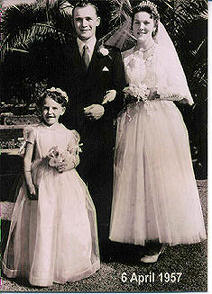
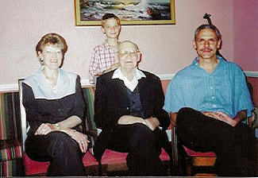

|
Indeks: |
b9.c1.d2.e7.f1.g3.h3.Willem Taljaard Stopforth Henning *6-6-1961, of te wel Tappe Henning, soos hy algemeen bekend is, is onlangs aangewys as een van vier lede van die Internasionale Rugby-raad (IRR) se skeidsregterskeuringskomitee. Hierdie komitee moet "wag-hond" speel oor die aanstelling en vertonings van alle Internasionale skeids-regters.
Hierdie aanstelling is 'n groot eer wat Tappe aangedoen is, want dit is 'n baie verantwoordelike pos wat hy met groot omsigtigheid sal moet benader. Hy neem besluite oor ander skeidsregters se loopbane en dit kan nie ligtelik opgeneem word nie. Tappe sal dus 'n baie belangrike rol speel tydens die komende Wêreldbekertoernooi, wat gedurende September in Frankryk gehou word.Hoewel hy nie te veel kon uitwei nie, sê Tappe dat daar wel 'n paar veranderings aan die reëls gemaak sal word ná afloop van vanjaar se Wêreldbekertoernooi, en hande sal in die losskrum toegelaat word.
Tappe beskou die eerste toetswedstryd en Curriebeker-eindstryd wat hy hanteer het as twee van die hoogtepunte van sy loopbaan, asook spesiale wedstryde, soos John Eales se laaste wedstryd en 'n bepalende Sesnasies-wedstryd tussen Engeland en Frankryk. BAIE GELUK TAPPE!! ALLE HENNINGS IS TROTS OP JOU.

Bennie - en Pieter Henning is twee gebore Heidelbergers wat enige ouer se hart van trots sal laat swel. Beide het hul laerskoolloopbaan te Laerskool AG Visser voltooi en Bennie was ook in 1982 die hoofseun van die skool.
Bennie het in 1998 sy Doktorsgraad in Meganiese Ingenieurswese aan die Randse Afrikaanse Universiteit (RAU) (vandag die Universiteit van Johannesburg[UJ]) voltooi en sy broer het nege jaar later in sy voetspore gevolg.
Bennie werk reeds die afgelope sewe jaar vir Baliman Titaco en Engineering as Senior Meganiese Ingenieur en is 'n spesialis in berekenings van vloei meganika. Hy is ook 'n eksaminator vir die Universiteite van Johannesburg en Pretoria.
Pieter het vanjaar sy Doktorsgraad in Meganiese Ingenieurswese voltooi. Sy proefskrif is opgedra ter nagedagtenis aan sy oorlede pa (Ben) wat die begin van die werk gesien het, maar nooit die voltooiing daarvan nie.Pieter is tans 'n dosent by die Departement van Ingenieurs- en Wetenskappe van die Fakulteit Ingenieurswese en die Bou-omgewing van UJ. Pieter is ook sedert 1996 die UJ Rugbuklub se spanbestuurder.

|  |
b7.c8.d8.e1.f5. Gideon Stephanus (Giep) Henning *10-10-1935 van die Strand, is die afgelope nege jaar Voorsitter van die Henning Familiebond. Hy is een van daardie Hennings met "goeie gene". As mens na sy geboortedatum kyk, wil dit lyk of hy al 'n ou gryskop omie moet wees - amper 72 jaar oud. Hy en sy vroutjie, Wena, het ook op 6 April 2007 hulle goue bruilof gevier, wat darem vir mens sê dat hulle nie meer kuikens is nie.
As mens egter na Giep kyk, sal jy nooit glo dat hy al verby die sewentig merk kan wees nie - hy lyk en tree op soos 'n persoon minstens 20 jaar jonger. Hy speel byvoorbeeld nog gereeld op provinsiale vlak vir die Westelike Provinsie se Meesters Pluimbalspan. Gedurende Julie 2007 het hy byvoorbeeld nog aan die Nasionale toernooi in Kimberley deelgeneem. Diegene wat pluimbal ken sal weet dat dit 'n vinnige sport is, waar goeie reflekse en fiksheid noodsaaklik is.
Om egter na hulle goue bruilof terug te keer. Giep en Wiena het op 6 April 'n klompie familie en vriende in 'n restaurant in die Strand onthaal om hierdie heuglike gebeurtenis te vier. Soos die noodlot dit wou hê, het nie 'n enkele foto wat by die geleenthied geneem is, uitgekom nie. Ons moet dus 'n foto gebruik wat reeds so 'n paar jaar oud is.

Die Laerskool Vredenburg, daar aan die Wes-Kus naby Saldanha, het gedurende Junie 'n kompetisie vir al die leerlinge van die skool gereël. Kinders het in hulle grade meegeding om te bepaal wie die beste Vadersdagkaartjie kon opstel.
Esté Swanepoel, 'n graad 2 leerder en dogter van Esra Swanepoel en sy vrou Hannelie (gebore Henning, b7.c8.d8.e3.f4.g1) het as wenner in die Graad 2 kompetisie uit die stryd getree. Lees gerus haar pragtige kaartjie op die laaste bladsy.
Die "kieliekarate" waarna Esté verwys, is haar pa se lawwe manier van karate, waar hy die kinders tussen snaakse armswaai bewegings deur kielie.
Esra en Hannelie is lede van die familiebond


Ons het met leedwese verneem van die volgende Hennings wat oor die afgelope tyd oorlede is: 1. b7.c8.d8.e5.f4. Memory Daisy Wagenaar (gebore Henning) gebore 4 November 1960 en haar man Noël en seun, Stefan (16) woon in Maclear, bo in die Drakensberge, in die Noord-Oos Kaap. Sy was die oggend van 27 April 2007 nog 'n pragtige vroutjie, in die fleur van haar lewe. Op hierdie noodlottige dag het sy 'n aneurisme op die brein ontwikkel en vinnig gesterf. Dit is duidelik dat Noël probeer om dapper te wees, maar dat Memory se dood hom geweldig swaar getref het. Stefan, wat baie geheg aan sy ma was, verwerk sy ma se onverwagte dood ook baie moeilik.
2. Dan het ons verneem van die afsterwe van Selwyn Wilhelm Krull, eggenote van b7.c2.d3.e5.f2.g2. Antoinette Cecilia (gebore Henning) *25-1-1942 van Gonubie, Oos-Londen gedurende Julie 2007. Hulle is lede van die Familiebond. Ongelukkig kon ons nie verdere gegewens bekom nie.

Dit lyk behoorlik of die geboorte van Henning babas opgedroog het, want ons hoor deesdae selde van nuwe geboortes. In die Burger van 18 Julie 2007 het ons egter in die "Familiekennisgewings" gelees van 'n nuwe babaseuntjie wat vir Pierre en Elsdon Henning in die Stellenbosch Medi-Kliniek gebore is op 13 Julie 2007. Dit is hul derde kind. Dit blyk of dit b1.c6.d3.e7.f8.g5. Pierre Stephanus Henning *15-5-1964 en sy vroutjie Elsdon (gebore Meiring) *17-8-1971 is. Ons moet nou net uitvind wat die klein mannetjie se volle voorname is. Is daar enigiemand wat weet of kontak met hulle het.

Oor die afgelope drie maande het slegs twee lede bydraes van R200.00 of meer aangestuur, nl. Werner Henning van Cresta, Johannesburg - R200.00 en Eric en Ellen Naude (lewenslange lede) van Rosslynn, Pretoria - ook R200.00 Baie dankie. Dankie ook aan Henning Pieterse van Rietvalleipark, Pretoria en Jan Henning van Glenstantia, Pretoria (lewenslange lid) wat vol hou om maandeliks per debietorder by te dra.
Met die jaar wat al sy einde nader, is daar nog 27 lede (gesinne) wat nog nie hul beloofde bydraes vir die jaar aangestuur het nie.

Sedert die begin van 2007 het ons die Henning Familiekroniek op Laserskyf (CD) aansienlik bygewerk. Heelwat nuwe gegewens is ontvang en dan het ons al die foto-albums beter ge-orden.
Daar is gevolglik besluit om weer, soos verlede jaar, die laserskyf tot einde Desember teen 'n verminderde prys beskikbaar te stel, nl R120.00 (alles ingesluit), in plaas van die gebruiklike R150.00 plus posgeld en verpakking.
Ons het ook nog 'n aantal ander Henning aandenkings beskikbaar, wat almal pragtige kersgeskenke uitmaak:
Teelepels (goud geplateer) - R28.00 elk
Lapelwapens - R20.00 elk
Mansjetknope - R60.00/ stel
Skryfblokke - R24.00 / 50 bladsye
Bierbekers (slegs twee beskikbaar, ongelukkig verskillende soorte) - R40.00 elk
Waar posgeld en verpakking normaalweg bygevoeg moet word, stel ons al hierdie items beskikbaar sonder die betaling van addisionele posgeld. Die aangeduide pryse is presies die kosprys wat die Familiebond daarvoor betaal het. Deur nie posgeld te hef nie, verkoop die Familiebond dus die items teen 'n verlies. Ons wil veral meld dat die mansjetknope baie deftig vertoon en beslis 'n aanwins sal wees vir 'n man wat van tyd tot tyd baadjie en das dra. Moet ons Henning mans nie leiding neem om weer deftige mansjetknope te dra nie? Veral as dit sulke pragtige mansjetknope is! ... en as julle die goed nie wil dra nie, koop dit net en spog daarmee by jul vriende!!!
Bestellings kan per brief, telefoon of e-pos geplaas word. Betaal die geld direk in die Familiebond se bankrekening as volg: ABSA Bank Villiersdorp (tak 334-612), rekeningno 2890 610 423

Ons ontvang gereeld briewe van mense reg oor die hele wêreld wat ons komplimenteer met ons mooi en waardevolle webwerf op Internet. Meeste van die buitelandse briewe vra vir inligting, terwyl baie van die binnelandse briewe nuwe gegewens vir ons deurgee. Ons plaas graag so 'n paar van hierdie briewe:
1. Hello, I was just researching my bloodline and found your wonderful website. I figured I would contact you and tell you the little bit I know of my family, maybe it would help to piece more together. My Father is Charles Henry Henning, son of Henry Henning. Henry was from Bremen Germany and had a brother named Peter(sp.). My father is 67 and age is begining to set in a bit, as he is getting forgetful of his distant relatives. I am 26 years old and live in New York USA. If there is any more information I can attempt to gather to help please let me know via E-mail. You have wonderful website and I have enjoyed it very much.
2. Ek is Gertruida Alida (Henning) dogter van Hendrik Jacobus Henning tans woonagtig in Rustenburg. Wil dankie sê vir al die moeite wat gedoen word met al die inligting wat vir ons verskaf word op die internet.
3. My name is Leanne Celeste Klein. I am a daughter of Heiltje Henning, now Heila Verster, born 1.11.40. I was born 26.05.1965, in Port Elizabeth, South Africa. I married Thomas Heinrich Klein on the 9.11.1985 in London, and divorced 2.03.2004. I have 5 children:- Dagmar Ella, born in London, England, 10.10.1985; Katja Daniella, born Durban South Africa, 17.07.1990; Christian Daniel, born Kaiserslautern Germany, 25.07.1992; Maximilian Thomas, born Kaiserslautern Germany, 13.06.1994; and Hannah Rachel, born Kaiserslautern, Germany, 26.08.1996. I live with my children in Queensland Australia.
4. Dankie vir die wonderlike webwerf, min kan met so iets spog! Ek het 'n Word dokument (.doc) aangeheg met aanvullings tot en regstellings van die databasis met betrekking tot my familie. Indien dit nie die regte prosedure is nie lig my dan asb. in en ek sal sorg dat ek dit op die gepaste manier doen. Eugene Henning
5. Peter Henning skryf as volg: My Fathers Name was William Geoffrey Bishop Henning
Born in Bulawayo August 1922 I think as there are no records I cannot confirm. Died Salisbury, Rhodesia May 1967.
I'm sorry but there are no longer any of the family left who can supply me with any information about my Grandparents though I believe his name was William as well.
It would be greatly appreciated if you are able to get any information but I fully understand your difficulties knowing the level of beauracracy or lack of that was in place during the latter 19th early 20th centuries in Southern Africa
6. Helena Garner rig 'n brief aan Prof Gideon De Kock van die Universiteit van Port Elizabeth, met Olivier Henning ter informasie:
Hallo Olivier & Gideon,
Ek het bietjie na die Henning-webblad gekyk. Olivier noem daar 'n Francina Louisa Kriel. Ek het die volgende, is dit sy? Francina Louisa Kriel *30-8-1931, Montagu, dogter van Gideon Jacobus Petrus Kriel *10-5-1891, Touwsrivier = 12-7-1891, Montagu. (Doopgetuies: P.S. Marais, H.J.M. Kriel, F.N. Vermeulen, R.S. Folscher) +24-12-1975 en Rosa Hermina Cilliers *7-4-1897 =17-8-1897, Barrydale +11-11-1967 Sy x Servaas Daniel de Kock. Kind: Louise Hermine de Kock. Gideon, kan jy hier help met meer gegewens? Baie dankie. Helena Garner (nee Kriel)
Olivier reageer as volg op haar brief: Dagsê Helena,
Ongelukkig kan ek niks byvoeg by dit wat jy op ons webblad gesien het nie - behalwe natuurlik die dogter, Louise Hermine de Kock *15-1-1955 se man (Gert Frans Johannes Henning *14-7-1949) en hul kinders. Hierdie besonderhede is volledig op die webblad.
7. Hi, I am searching for the family of a Karl Albert (Gilbert) Von Henning who was a Tea Plantation Manager in the early 1900's and at some stage lived near Kamrup I hope this is the correct spelling
Looking forward to your reply
Shirley
Ons kon haar na die Henning webwerf op Internet verwys, omdat ons deesdae ook 'n geslagsregister van 'n Von Henning familie daar vertoon.
8. I suspect that Alida Hendrina Margaretha Henning is the wife of my ancestor,William Alfred Taylor, born June 1883. They had the following children: Williiam Alexander, b. 1907, Norman Alfred, b. 1909, Edith Johanna, b. 1911, and Alfreda Mabel and Mary, date of birth unknown.
Can you confirm that this information is correct and furnish any other information on the family?
Thanks, Ruth in Florida, USA
Die betrokke persoon is b7.c1.d10.e5. Alida Hendrina Margretha Henning. Ook in hierdie geval kon ons volle besonderhede verskaf.
9. Alicyn Henning here, now married Schwartz and living in Germany, was living in Zimbabwe with my dad Derek Henning, I guess my circle is now complete and back in Germany Berlin. Please add my website to your site and please could I add our henning site to my website?
Love, Alicyn
Alicyn se pa, Derek Marcus Henning is 'n lid van die Familiebond en woonagtig in Mutare, Zimbabwe. Hy is een van slegs 'n paar wit boere wat nog nie van hul plase af weggejaag is nie.

Diegene met E-Posfasiliteite moet asseblief daarop let dat Bondsekretaris, Olivier Henning verplig was om sy E-Posadres te verander het, weens die groot hoeveelheid gemorspos wat hy daagliks ontvang het - meer as 100 per dag/ sewe dae per week.
Sy nuwe adres is: olie4@henning.org
Indien u probleme ondervind om met Olivier te skakel, kan sy altenatiewe adres ook gebruik word: henning@xpoint.co.za

Die vadersdagkaartjie waarmee Esté Swanepoel die Graad 2 kompetisie aan die Laerskool Vredenburg gewen het. Is dit nie 'n goeie pa nie?